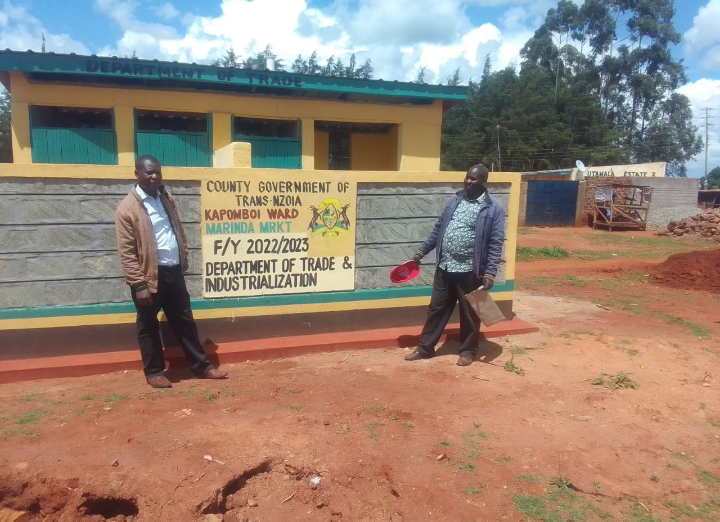

kapomboi Ward celebrates Successful Completion of New Toilets, Embracing Sanitation Standards and Community Well-being
Kapomboi Ward is rejoicing as the construction of new toilets has reached its completion, marking a significant milestone in improving sanitation standards and promoting community well-being. spearheaded by Hon. Kefa Were, the local representative, this transformative project has successfully addressed the pressing need for proper sanitation facilities within the ward.